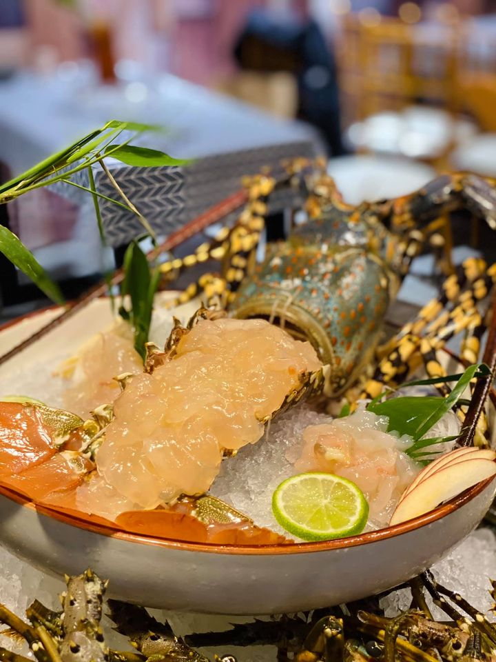
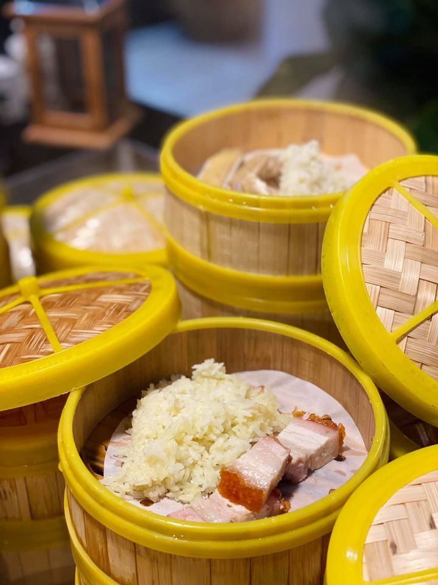
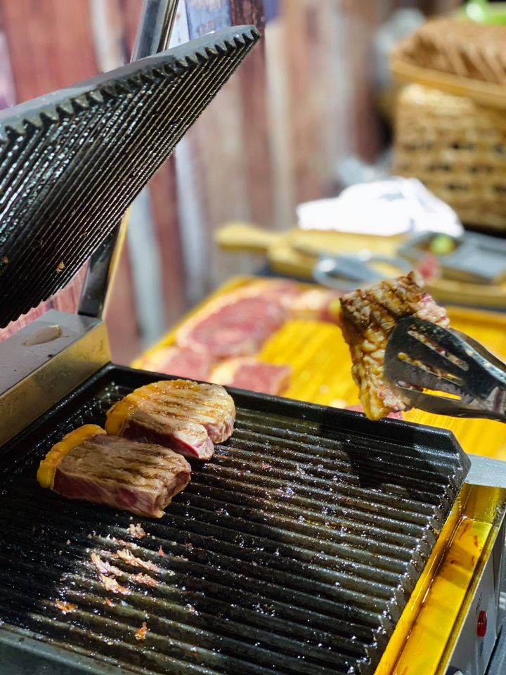
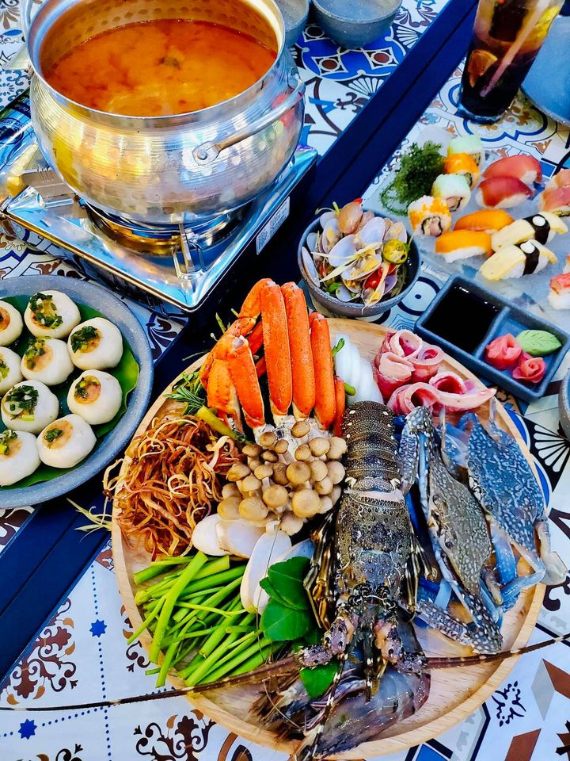
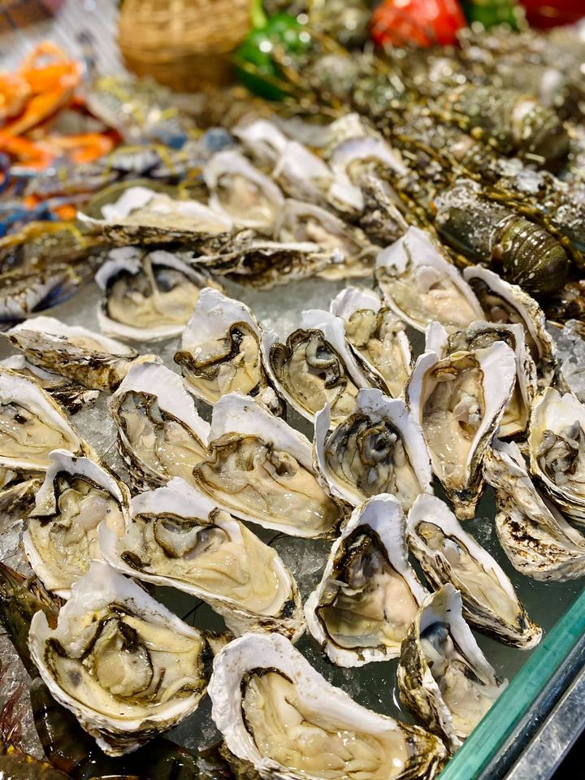
 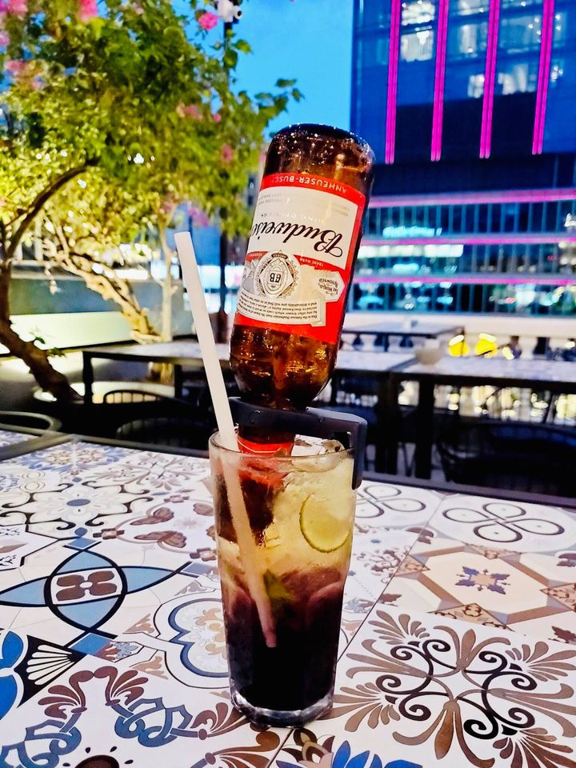
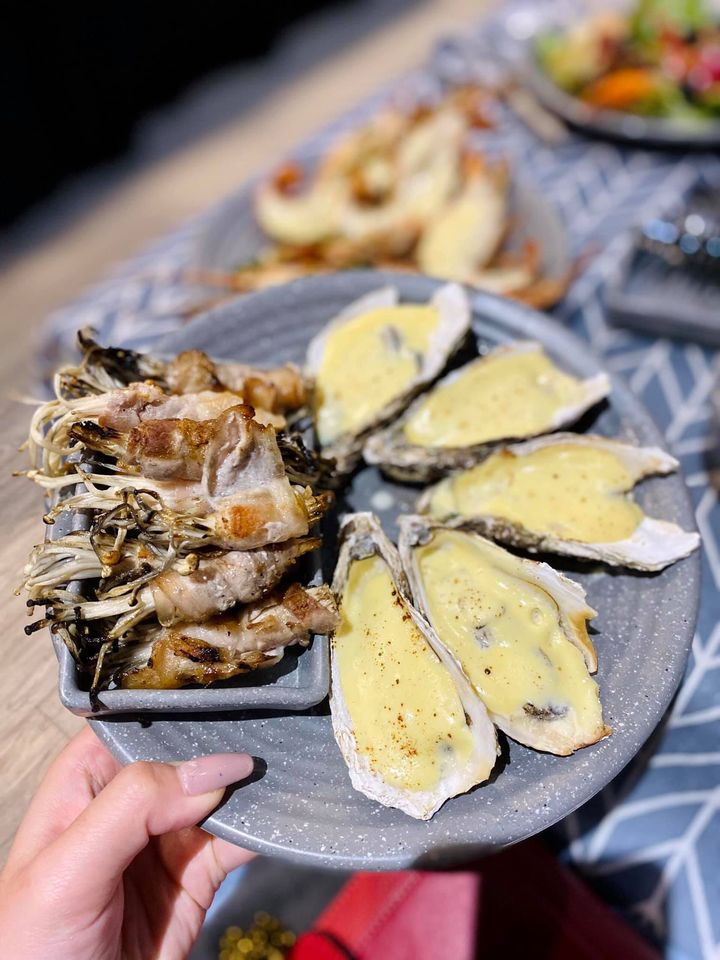
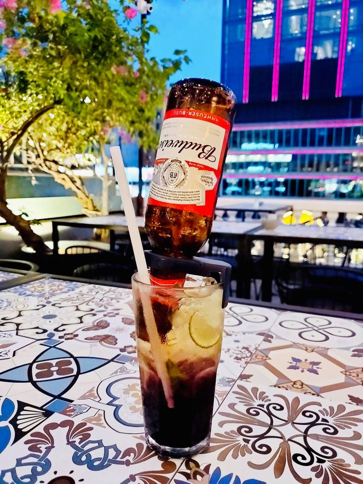
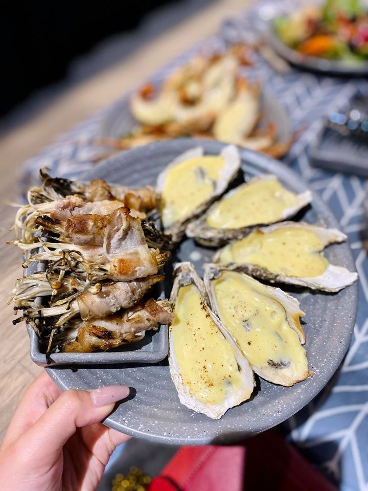
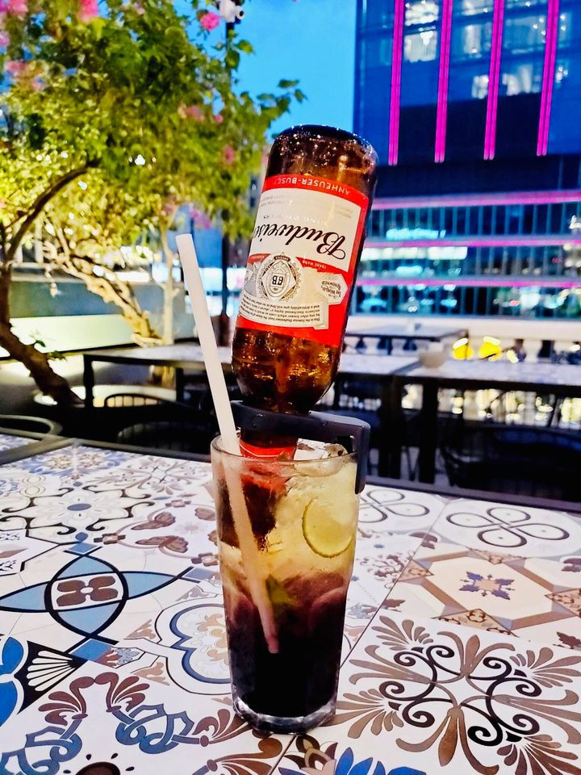
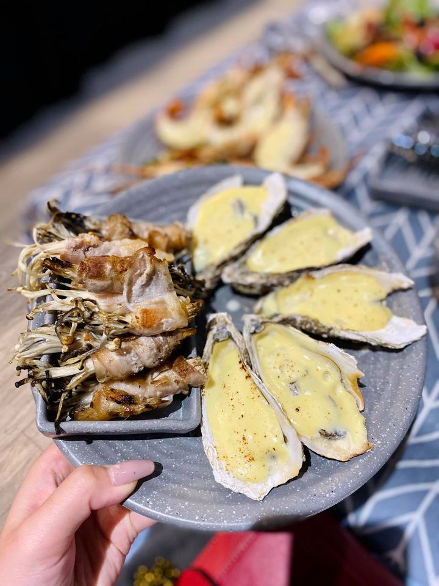
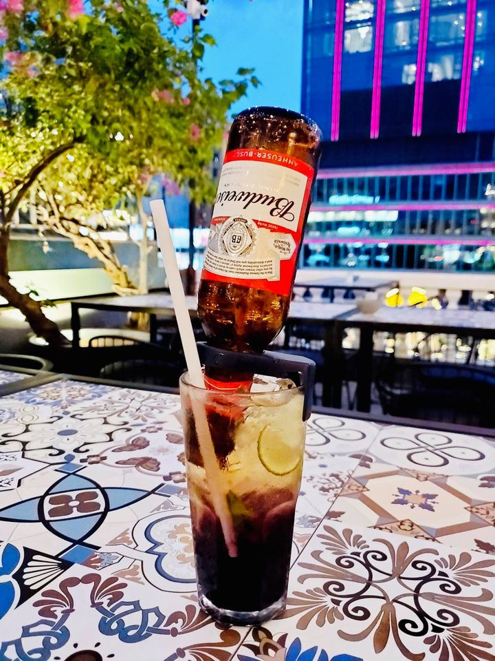
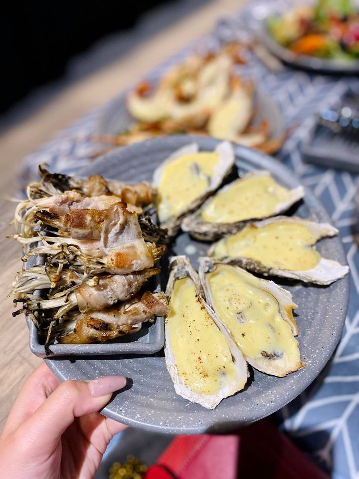
1. Sự kết hợp giữa món ngon, không gian đẹp và chi phí phải chăng khiến Chài Village Buffet trở thành một trong những địa điểm ăn uống được rất yêu thích tại Sài Gòn. Bên cạnh đó, còn có rất nhiều điều thú vị đang chờ bạn khám phá tại đây.
2. Một trong những điều khiến nhiều người thích thưởng thức những bữa tiệc tại Chài Village Buffet chính là những khoảng không gian mở tại đây. Với diện tích hơn 400m2, nhà hàng được chia thành rất nhiều khu vực với những quầy đồ ăn khác nhau. Toàn bộ nhà hàng được trang trí theo phong cách đặc trưng của miền biển nước ta. Màu xanh đại dương chủ đạo và những đồ dùng bày trí như lưới đánh cá, mái chèo được sắp đặt xung quanh tạo nên một sự gần gũi quen thuộc với thực khách. Không chỉ có không gian rộng rãi, thoải mái ở khu vực bên trong, nhà hàng còn có vị trí ban công nhìn ra trực tiếp phố đi bộ. Nơi đây rất thích hợp cho những ai muốn tận hưởng cảnh quan thoáng đãng và ngắm cảnh Sài Gòn lung linh, tấp nập. Bạn có thể đặt bàn trước hoặc đến sớm để được bố trí ngồi tại khu vực này.
3. Nếu nhìn vào Chài Village menu, bạn có thể thấy rất nhiều món ăn quen thuộc, đặc trưng của xứ sở hoa anh đào. Tuy nhiên ngay bên trong nhà hàng, bạn sẽ thấy các khu vực nguyên liệu đồ ăn tươi sống khác nhau như hồ hải sản, rau củ, hàng đóng hộp, cơm bento và sushi. Tại đây bạn sẽ được tự tay lựa chọn nguyên liệu, sau đó có thể trực tiếp nhìn thấy các đầu bếp giàu kinh nghiệm tự tay xử lý chúng. Sự kết hợp giữa phong cách “đi chợ” ở miền biển trong không gian ẩm thực Nhật Bản tạo nên những trải nghiệm vô cùng thú vị cho thực khách. Đối với bữa tiệc buffet sushi tại Chài Village nổi tiếng nhất tại đây, bạn có thể thoải mái lựa chọn các món ăn mình yêu thích với menu lên tới 60 món khác nhau. Mỗi món đều được chế biến từ các nguyên liệu tươi mới và trang trí cầu kỳ, đậm chất ẩm thực Nhật Bản. Đây sẽ là cơ hội tuyệt vời để bạn trải nghiệm và tận hưởng sự phong phú, đa dạng và chuẩn vị với sushi Nhật Bản. Thông thường, các bữa tiệc buffet sushi chuẩn vị Nhật tại những nhà hàng nổi tiếng thường có chi phí không nhỏ. Tuy nhiên bảng giá Chài Village khiến nhiều người phải ngạc nhiên bởi tất cả đều rất phải chăng, nếu không nói là rất “hời” so với mức chất lượng mà bạn nhận được. Giá các món giao động từ 38.000đ – 198.000đ, còn buffet sushi có giá 299.000đ/ suất.
4. Tại những kênh thông tin của nhà hàng và các trang ẩm thực, du lịch, bạn có thể bắt gặp rất nhiều review tốt về Chài Village Buffet. Trong đó sự phục vụ tại đây luôn được đánh giá cao. Không chỉ chuyên nghiệp, nhanh nhẹn và tận tình, các nhân viên tại đây luôn tạo ra năng lượng tích cực, khiến các thực khác cảm nhận được sự thân thiện, gần gũi và dùng bữa trong tâm trạng vui vẻ. Bên cạnh đó, nhà hàng rất chú trọng đến văn hóa tiệc đứng. Vì vậy chỉ cần trang bị những kinh nghiệm ăn buffet đúng cách, bạn sẽ có được những trải nghiệm vô cùng thoải mái, hài lòng.